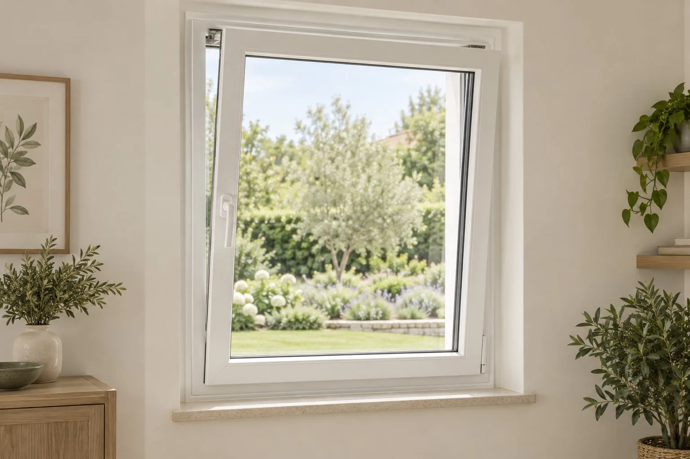
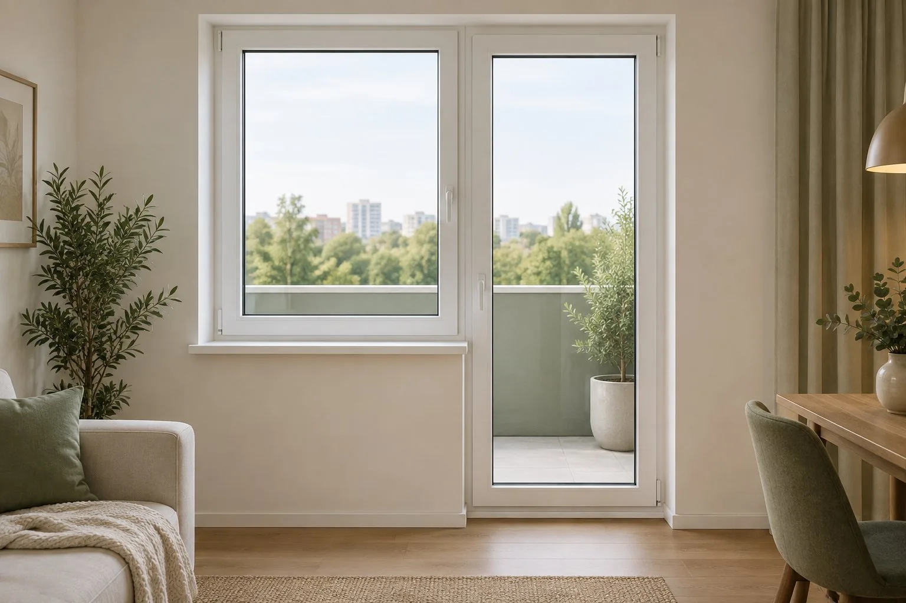
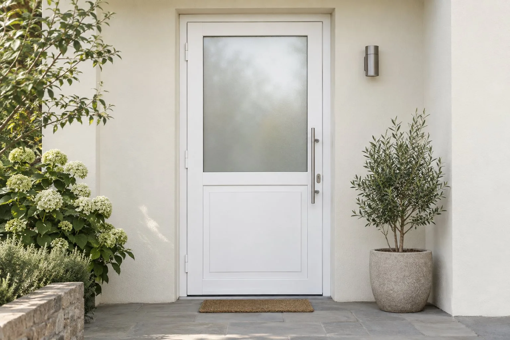
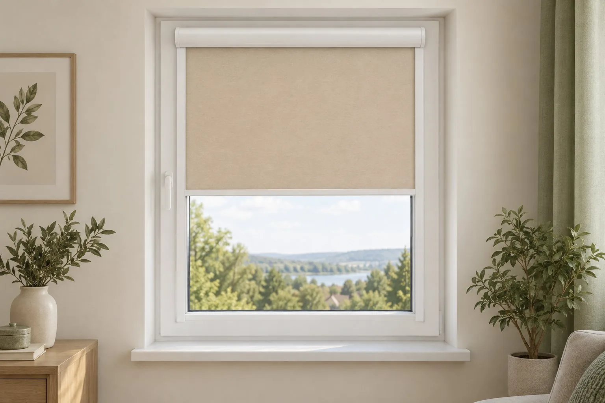

01 / Квартира
Тише и теплее в спальне
Поворотно-откидная створка и двухкамерный стеклопакет — пример для комнаты, где важны тепло и удобное проветривание.
Посмотреть окна в каталоге ↗Четыре типовых сценария помогут представить, с чего начать выбор окна, двери или солнцезащиты. Точную комплектацию подбираем после замера.

Поворотно-откидная створка и двухкамерный стеклопакет — пример для комнаты, где важны тепло и удобное проветривание.
Посмотреть окна в каталоге ↗
Окно и балконная дверь в едином стиле. Размеры, направление открывания и стеклопакет выбираются под помещение.
Посмотреть балконные блоки ↗
Подбираем профиль, заполнение и фурнитуру под размеры проёма и условия эксплуатации дома.
Посмотреть двери в каталоге ↗
Кассетная рулонная штора помогает регулировать освещение и укрыться от посторонних взглядов. Подбираем ткань и размеры под ваше окно.
Посмотреть шторы в каталоге ↗